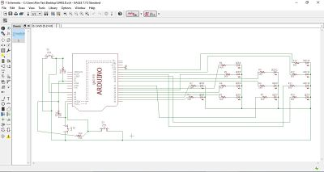
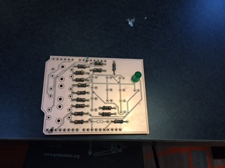
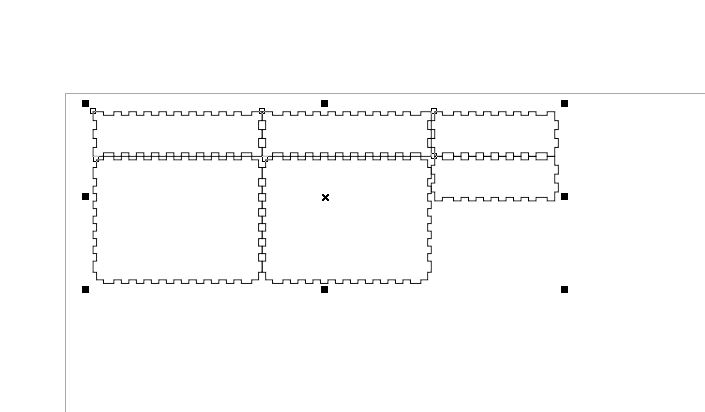
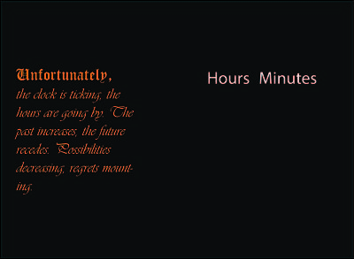
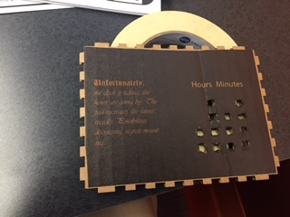

For the final project I decided to do a binary clock controlled by an Arduino with a cardboard box encasing it. The four processes entailed in the project are: CAD design, Laser cutting, UV printing and Arduino programming.
I first stumbled upon this project when I was browsing through the instructables page, and there was a project about an LED binary clock. After establishing that this is a very, very cool project, I researched on the Internet and then used part of the schematics from this guy.
The most
My first attempt was to print out a circuit board using the LPKF milling machine to serve as an Arduino shield and solder the parts onto the circuit board. I used EAGLE to design the schematics and arrange it on the board.
Here's a video of the machine cutting:Electronic Board Cutting.
Unfortunately, due to my bad soldering skills with small dimensions, I failed on two attempts to solder everything together. Following is the second failed product.
The file is Shield Design File.
Thus, I changed directions and then did less demanding project---building it on a breadboard and encasing the entire thing with a box.
The design of the box is Box Design File.
Then I assembled all the parts onto the breadboard and downloaded the program (Binary Clock File). I verified and uploaded to the arduino, but it did not work! After some musing and investigation, I found out the problem was the code related to the button---the author was using a different type of button than the ones inherent to our arduino sets. After running the serial monitor and testing the values and choosing 8 as the valve value, I tested it again. However, it did not work as I wanted either because the reading from the analog input often has values over 8 multiple times for the same press and values under 8 for others.
In the end, I decided to put in the actual time as part of the program so that the clock could be set on a computer.
For the cover of the box I used Adobe Illustrator to design the pattern. I pulled out a quote from Haruki Murakami that talks about time and added some signs as to what each column means.
 The file for the design is Clock Design File.
After I assembled every part, the box looks like this.
Now it is time to test whether it really tells the time, and verily it does. Here are two photos 1 minute apart. The on and off of the LED expresses respectively 1 and 0. The first column expresses the tens digit of hour, the second expresses the unit digit of the hour, the third the tens digit of the minute, and the last the unit digit of the minute. The four rows represent, from top to bottom, 8, 4, 2, and 1.
Here is the complete video of the minute: Binary Clock.